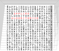

COMP 526 – Applied Algorithmics (Spring 2020)
This is an archived version of this module from Spring 2020.
Click here for the current iteration.

Applied Algorithmics (COMP 526) is a second-term masters module on efficient algorithms and data structures. It covers a few fundamental results in algorithms and data structures plus more advanced topics, with an emphasis on methods that are useful in applications.
Quick links
PINGO session ⋅ Piazza ⋅ Exam question pool ⋅ Units
Teaching Evaluation
Here are the results of my personal teaching evaluation. (The University of Liverpool decided not to run official end-of-module evaluations because of the highly unusual term. I tried to follow closely the questions that would have been asked.)
Administrativa
University of Liverpool has canceled all face-to-face classes
starting 16 March till the end of the term;
see University Coronavirus (COVID-19) Advice & Guidance.
Lectures will continue in the scheduled slots
as youtube livestreams; see piazza for links.
Live Lectures took place on
- Mondays, 16:00 – 17:00 in ELEC 204, and
- Tuesdays, 15:00 – 17:00 in ELEC 202.
Please bring a device with a web browser to class for the clicker questions!
There are two groups of tutorials, run by George Skretas.
- Group 1 meets Wednesdays, 10:00 – 11:00 in GHOLT H223, and
- Group 2 meets Wednesdays, 12:00 – 13:00 in BROD 402.
(Trouble finding rooms? Check out this list.)
Lecture recordings
All lectures (except the flip-class unit 2) as screencast:
Piazza
We will use Piazza for questions & answers, discussions, and announcements in this module.
Please register and join COMP526 on Piazza.
Important: Please use your University of Liverpool liv.ac.uk email address!
Pool of Exam Questions
We maintain a collaborative list of sample exam questions on Overleaf. (You have to create a free account.)
Join us in making this a great resource for preparation for the exam – and if your questions are good enough, they might end up inspiring the actual exam! This is also a chance to learn some $\LaTeX{}$; (if you choose not to, you can use the “rich text” WYSIWYG interface of Overleaf).
Clicker questions
We will use the PINGO system for in-class feedback; you are therefore encouraged to bring your web-capable devices to class. When you are in class, join our PINGO session.
PINGO is a student response system originally developed at University of Paderborn and is available for use free of charge here.
Syllabus
The module will consist of the following units (covering roughly a week of lectures each, but that’s only true on average):
- Unit 0 – Administrativa & Proof Techniques
- Unit 1 – Machines & Models
- Unit 2 – Fundamental Data Structures
- Unit 3 – Efficient Sorting
- Unit 4 – String Matching
- Unit 5 – Parallel String Matching
- Unit 6 – Text indexing
- Unit 7 – Compression
- Unit 8 – Error-Correcting Codes
- Unit 9 – Range-minimum queries
Exam & Assessment
The final grade for the module is the weighted average of
- the final written exam (75%) and
- continuous assessment (25%).
This will consist of- a video presentation (see piazza post for details),
- the bamboo programming puzzle,
- the exam-code programming puzzle,
- and in-class participation in clicker questions;
- moreover, collective bonus points can be gained by productive participation on Piazza and on the pool of sample questions.
More detail will be provided in class (see Unit 0).
Note that exam papers of previous iterations are available from the department (intranet). Subject to minor changes in the covered material, these remain excellent training grounds for the final exam.
Prior-Knowledge Survey
The module started with an ungraded diagnostic assessment; for details, see the subpage on the prior-knowledge survey.
Further resources
There are many good algorithms textbooks, but no single definitive one that covers all topics of this module (in the way I want them presented!). Indeed, I have been cherrypicking the – in my opinion – most suitable descriptions from a variety of sources; check the individual units for details.